Comme me le faisait remarquer dernièrement ma chère amie Helena Sydorova, cette année les fêtes de Pâques Catholiques et Orthodoxes tombent le même jour soit le 16 avril 2017. Il faut peut-être y voir là, en ces temps troublés, un véritable symbole pour nos deux pays de longue tradition chrétienne. Aussi, pour commémorer cet évènement, j’ai souhaité remémorer la belle tradition des œufs de Pâques de la famille impériale des Romanov.
Tout d’abord il convient de rappeler que la fête de Pâques est pour beaucoup de chrétiens la plus grande des fêtes car si Noël annonce l’incarnation du Sauveur, fils de Dieu sur terre, la fête de Pâques elle commémore la résurrection du Christ. Le mot même de Pâques vient du Latin « Pascha », dérivé du mot hébreu « Pascha » qui signifie le « passage » ; en l’occurrence le passage de la mort à la vie pour racheter tous les péchés du monde.
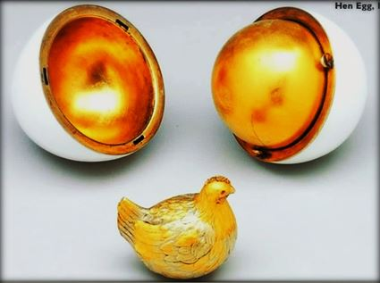
Premier œuf de Pâques Fabergé offert par le Tsar Alexandre III à l’impératrice Maria Feodorovna en 1885La très pieuse famille des Romanov, protectrice de la foi Orthodoxe - véritable monarque « Katechon » qui lutte contre l’Antéchrist, comme on le voit dans les armes de Moscou - ne pouvait être insensible à cette symbolique. La tradition indique que c’est le tsar Alexandre III qui commanda à Pâques 1885, le premier œuf délicatement ouvragé pour l'offrir à son épouse à l'occasion de cette grande fête chrétienne. Ce n’était pas pourtant un simple œuf décoré ordinairement comme on le faisait jadis dans les campagnes russes, mais bien plutôt un objet d’art novateur et raffiné conçu par l'orfèvre et bijoutier russe, Pierre-Karl Fabergé.
Lorsqu'en ce jour de Pâques 1885, la tsarine Maria Feodorovna, ouvrit l'œuf tout de blanc émaillé, elle découvrit à l’intérieur une coque en or qui renfermait une petite poule en or également avec des yeux rouges en rubis.
La poule était articulée à mi-hauteur, découvrant une miniature de la couronne royale ornée de diamants et d’un petit œuf délicat en rubis.
La création de Fabergé séduisit tellement le tsar et la tsarine que la famille impériale transforma ce cadeau privé en une tradition rituelle de Pâques, reprise ensuite par l'héritier d'Alexandre III, son fils Nicolas II. C’est cette belle tradition des Romanov que nous allons vous présenter maintenant.
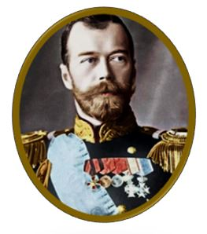
S.M.I.R. Nicolas II (1868-1918)Tout d’abord, on ne sera pas surpris d’apprendre que la famille impériale de Russie, célébrait la fête de Pâques avec un éclat tout particulier. Dès les premières années de son règne, qui débuta en 1894, le jeune et bel empereur Nicolas II et sa royale épouse l'impératrice Alexandra Fedorovna, avaient pris pour habitude de porter dans la nuit de Pâques, des œufs posés sur un plateau, au cours d’une procession particulièrement solennelle qui partait du Palais d'hiver de Saint Pétersbourg pour se rendre à l’Eglise afin d’y célébrer la messe de la Vigile Pascale.
Le lendemain, le jour de Pâques, après la messe de la résurrection, un grand déjeuner pascal réunissait toute la famille impériale et de très nombreux invités autour d’une table qui était notamment recouverte de gâteaux de Pâques (le fameux « Paska » à base de fromage blanc et de raisins secs) et d’œufs de Pâques peints.
C’est à l’occasion de ces grandes fêtes de Pâques que la famille impériale recevait le peuple russe qui venait les embrasser pour fêter avec eux la résurrection du Christ et prononcer le traditionnel « Christ est Ressuscité, Alléluia ! ». Cela concernait aussi bien des personnes de tous rangs même inférieurs, que des membres de l’escorte policière, de l'équipe du yacht impérial, des enfants des écoles locales, des étudiants, des fonctionnaires etc… ! Tous les invités repartaient avec des œufs de Pâques offerts par le couple impérial. Certains d'entre eux étaient de simples œufs peints mais d’autres pouvaient être de véritables œuvres d’arts recouvertes de pierreries précieuses, d’or et d’argent ainsi que d’émaux peints provenant du célèbre joaillier russe Fabergé.
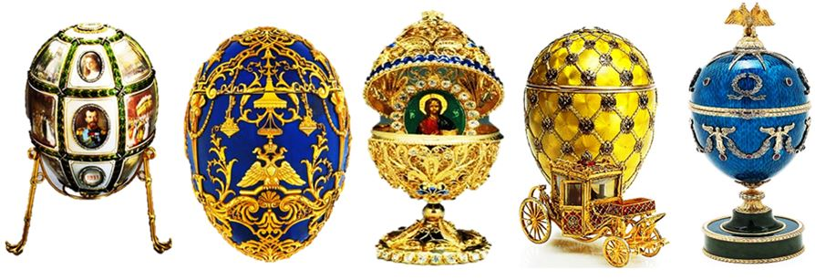
Différents œufs de Pâques Fabergé qui portaient tous un nom
L'empereur se rendait ensuite auprès des hommes de sa Garde ou de plusieurs de ses régiments dont il était colonel, pour leur remettre à leur tour un œuf de Pâques et les embrasser.
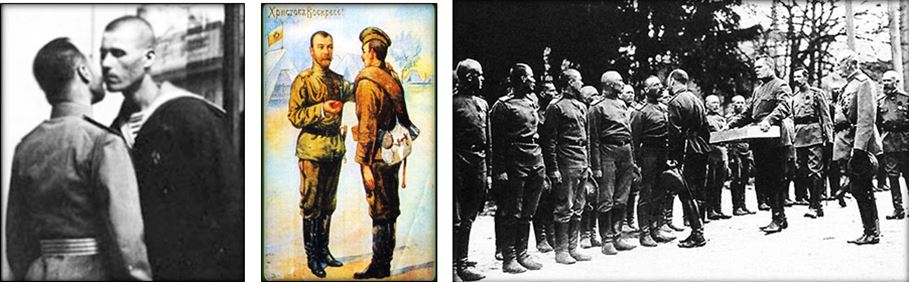
L’Empereur Nicolas II remettant les œufs de Pâques à ses soldats et les embrassant
De son côté l’Impératrice Alexandra – pourtant de faible constitution (elle avait des problèmes cardiaques) - se rendait dans de nombreuses écoles des jeunes filles qui en recevant le baiser de Pâques de l'impératrice se voyaient également remettre des œufs en porcelaines finement décorés aux initiales de la souveraine.
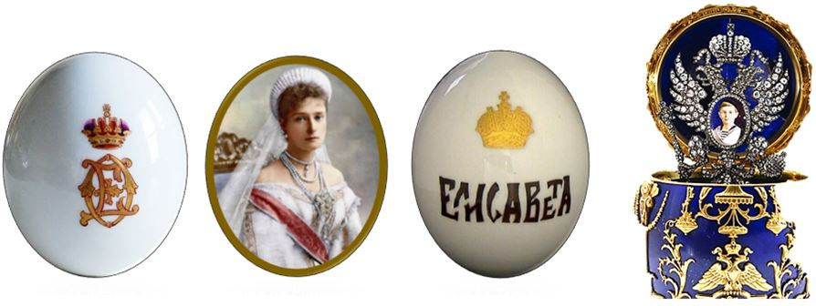
Œufs de Pâques au monogramme de l’Impératrice et œuf dit « Le Tsarévitch »
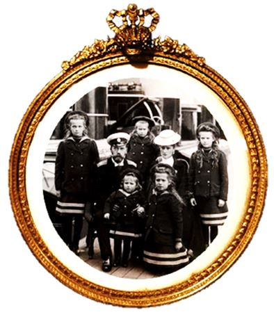
Les baisers royaux que remettaient l’Empereur et l’Impératrice à leur peuple lors des fêtes de Pâques, n’étaient pas de simples expressions de charité chrétienne « condescendante » mais bel et bien de véritables témoignages de piété évangélique et d’affection sincère des souverains pour le peuple russe, qui dans sa très grande majorité le lui rendait bien. En illustre un témoignage écrit par Anna Vyroubova, demoiselle d’honneur de l’Impératrice, dans ses mémoires : « J’ai gagné le premier baiser de Pâques du Tsar ! Alors que je jouais avec les enfants dans la garderie. L'empereur est entré de manière tout à fait inattendue. Il m'a d'abord embrassée, puis ensuite tous les enfants. Il est difficile de comprendre le grand honneur que cela représente de recevoir le baiser royal, si vous ne comprenez pas combien nous adorons sincèrement notre empereur. J’étais ravie et presque évanouie… ! ».
Les pauvres et des indigents n’étaient pas non plus oubliés par la famille Impériales. La distribution des œufs de Pâques était faite à des veuves dans le besoin ou à des enfants, orphelins d’anciens employés d’usines décédés, traditionnellement accompagnés d’un don matériel. A cette occasion, on notera que les œufs étaient percés d’un trou dans lequel était enfilé un ruban - quelques fois aux couleurs des ordres impériaux russes tels que les ordres de Saint Georges (orange et noir) ou de Saint Stanislas (Rouge et blancs). Ces rubans étaient destinés à accrocher les œufs sous les icones qui ornaient tous les foyers russes. D’autres œufs pouvaient être en bois peints, souvent avec des motifs religieux.
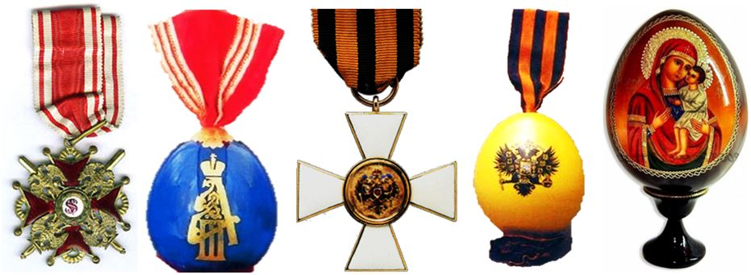
Dès le début du XXème siècle, c’est plus de 4.000 œufs de porcelaines qui étaient fabriqués à chaque fête de Pâques par les manufactures impériales pour être distribués au peuple russe par l’Empereur Nicolas II et son épouse. En 1916, pendant la première guerre mondiale ce nombre fut même porté à plus de 15.000 œufs (en papier mâché et peints de délicates enluminures) pour être distribués aux soldats du front. D’autres modèles furent réalisés en cuivre et acier par Fabergé dans un style plus martial (l’or et l’argent étant devenus rares) et l’Empereur fit même réaliser des œufs aux armes de l’ordre militaire de Saint-Georges pour ses officiers.
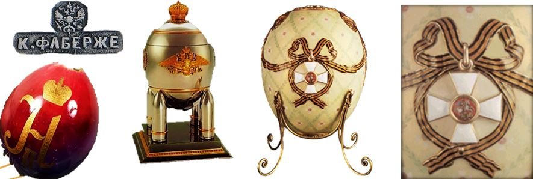
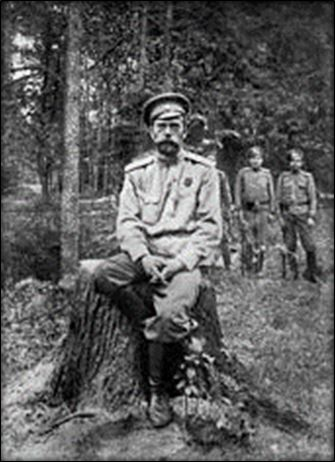
Nicolas II en captivité à Tsarkoie-Selo en 1917En 1917 et bien qu’en « résidence surveillée » au Palais Alexandre de Tsarskoïe Selo (près de Saint-Pétersbourg) sur ordre de Kerenski, la famille impériale pu tout de même recevoir près de 135 personnes et leur donner d’anciens œufs en porcelaine provenant de la maison impériale tout en leur donnant le baiser de Pâques.
Mais c’est sans doute la dernière des Pâques de la famille impériale en 1918 qui fut la plus malheureuse puisque que cette fois-ci sévèrement gardés cette fois-ci à Tobolsk en Sibérie, par les bolchevick, qui ont renversés Kerenski en octobre 1917, Ils purent tout de même accueillir un prête à 8h pour une courte messe de Pâques. Des petits œufs de couleurs rouges seront donnés aux quelques domestiques et au médecin qui accompagnaient la famille impériale.
Pour la Pâques 1917, le Tsar ayant abdiqué le 3 mars 1917. La famille impériale est alors mis en résidence surveillée par le gouvernement provisoire de Kerenski, dans le Palais d’été des empereurs « Alexander », à Tsarkoie-Selo (qui signifie « Village des Tsar ») près de Saint-Pétersbourg. Ils pourront encore y célébrer relativement libres, la fête de Pâques le 2 avril 1917 et suivre la messe puis offrir 135 œufs qui avaient été emportés dans leur exil, des réserves de la maison impériale. Mais la famille impériale est constamment victime de harcèlement des gardes, et Kerensky décide alors de les envoyer à Tobolsk en Sibérie occidentale, le 31 juillet 1917, dans le but de les protéger des bolcheviks.
Mais le pouvoir tombe, à son tour, aux mains des Bolchéviks et la contre-révolution s’approche de Tobolsk. Aussi en avril 1918, les révolutionnaires décident de rapprocher la famille impériale de Moscou et conduit le tsar, la tsarine et la grande-duchesse Marie, à Ekaterinbourg en Oural, dans la maison « à destination spéciale » dites Ipatiev. Les trois autres filles du tsar resteront à Tobolsk pour prendre soin d'Alexis, atteint d'une nouvelle crise d'hémophilie. Ils rejoindront le reste de leur famille un peu moins d'un mois plus tard.
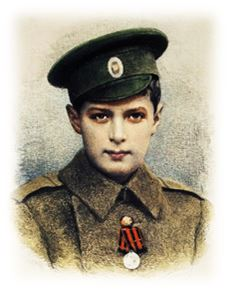
Signe du destin, la famille impériale arrive dans leur dernière destination, en pleine semaine Sainte, (Pâques tombant le 22 avril 1918), préfigurant ainsi symboliquement le Passion qu’ils allaient y vivre… La dernière Pâques de la famille impériale est bien tristement fêtée et aucun œuf ne sera distribué, un minimum de bagages ayant pu être emporté de Tobolsk. L’empereur notera d’ailleurs dans son carnet : « Pâques est passé tristement. Impératrice pleurait souvent. Nos gardes de l’armée rouge étaient constamment en état d'ébriété. Pourtant les gens à Ekaterinbourg sympathisaient profondément avec notre famille et nous envoyaient des cadeaux, des œufs rouges, des gâteaux de Pâques, mais avec prudence. Les gens avaient confiance et pensaient que nous serions secourus. ». Signe du destin, cette fois ci c’était le peuple qui offrait au Tsar, des œufs de Pâques !
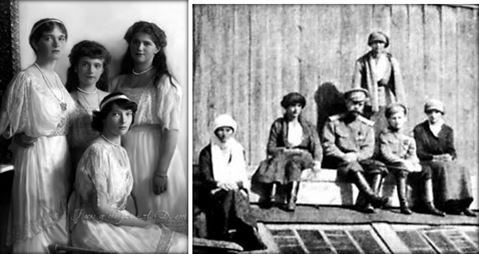
Les Grandes-Duchesses Maria, Anastasia, Olga et Tatiana et le Tsarévitch Alexis photographiés vers 1916 et l’une des dernières photos de la famille impériale à Tobolsk en 1918
Ce fut bien la dernière des Pâques pour la famille des Romanov. Les conditions de détention de la famille impériale, de leur médecin et des 4 serviteurs qui avaient demandés à rester auprès de leurs souverains furent particulièrement ignobles pendant les 3 mois de leurs détentions à Ekaterinbourg. Les gardes (A moitiés fous et constamment alcoolisés) multipliaient les vols, les privations alimentaires, les vexations et autres humiliations et grossièretés violentes à l’encontre de la famille impériale. Elle y vécu une véritable passion et martyrologue, à l’image de ce qu’avait vécu la famille royale de France à la Conciergerie du Temple à Paris en 1792…
Mais le 16 juillet 1918 la situation bascule dans l’horreur… Vers minuit, le responsable de la tuerie Golostchekine commissaire régional de l’Oural à la guerre, ordonne au geôlier Iakov Iourovski, membre du Soviet de dire au Docteur Botkine de réveiller la famille impériale et leurs serviteurs afin de se préparer pour un voyage dont on tait la destination. Ils sont alors tous conduits dans l’entresol de la maison, soi-disant pour y être photographiés afin de prouver leur « bonne santé » aux autorités bolcheviks de Moscou. L’empereur fait apporter une chaise pour son épouse et une autre pour son fils Alexis souffrant toujours des jambes. Un peloton d’une douzaine d’hommes apparaît alors dans la pièce et le geôlier déclare : « Nikolaï Alexandrovitch, les vôtres ont essayé de vous sauver, mais n’y sont pas parvenus. Nous sommes obligés de vous fusiller. Votre vie est terminée. ». Le Tsar, surpris, s’écrie d’abord « Comment ? Quoi ? » puis voyant les soldats prêts à tirer et paraphrasant le Christ sur la Croix déclare alors à haute voix : « Dieu, pardonne-leur, ils ne savent pas ce qu’ils font ! ».
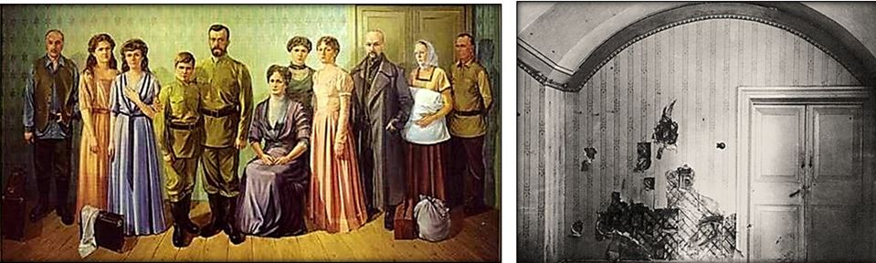
La famille impériale et leurs domestiques dans la cave Ipatiev avant leur martyr dans la nuit du 16 au 17 juillet 1918 (Le tsarévitch était en réalité assis sur une chaise, ses jambes malades l’empêchant de se tenir debout)
Les tirs ont lieu aussitôt à bout portant. Iourovski tire lui-même sur Nicolas II, vidant son révolver dans la poitrine de l’empereur qui meurt sur le coup. Les autres bourreaux tirent aussi frénétiquement jusqu’à ce que toutes les victimes tombent et que la fumée se disperse dans la pièce exiguë. Ils constatent alors que le tsarévitch Alexis, âgé de 12 ans, est encore vivant, les 4 grandes-Duchesses lui ayant fait un rempart de leurs corps ! Le commissaire bolchevik Peter Ermakov lui défonce alors le crâne à coups de baïonnette. Les dernières survivantes (Anastasia, âgée de 17 ans, Maria, 19 ans, Tatiana, 21 ans et Olga, 22 ans) dont les diamants cousus dans leurs vêtements leur ont servi un temps de gilet pare-balle, sont exécutées tout aussi sauvagement à la baïonnette et d’une balle dans la tête, afin d’étouffer leurs cris qui pouvaient être entendus à l’extérieur. Une servante qui miraculeusement n’avait pas été touchée par les balles des bourreaux est aussi sauvagement assassinée… Les corps sont alors emballés dans des draps, hissés dans un camion et conduits vers une fondrière à quelques kilomètres de là. Ils y seront brûlés à la chaux vive et leurs visages vitriolés. Mais les corps n’étant pas complètement dissous et brulés à l’aube, les bourreaux reviendront la nuit suivante finir leur triste besogne avec toutes les incohérences historiques que l’on connait et que nous ne traiterons pas ici… Quoiqu’il en soit, le massacre de la famille impériale sera le signal de la boucherie communiste qui ensanglantera ensuite tout le pays et le plongera dans les ténèbres pendant plus de 70 ans.
Mais après la chute du communisme et l’ignorance du martyr de la famille impériale, l’Église orthodoxe russe annonce le 15 août 2000, la canonisation des Romanov pour « Leur humilité, leur patience et leur douceur ».
De nombreuses icones de la sainte famille impériale sont alors peintes et diffusées dans tout le pays pour orner les maisons du peuple de Russie.
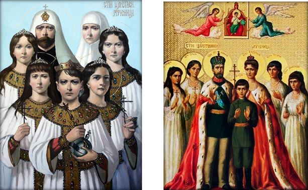
Le 1er octobre 2008, la Cour Suprême de la Fédération de Russie, sous l’influence de Vladimir Poutine, poursuivra la campagne de réhabilitation des Romanov et estimera à son tour que Nicolas II et sa famille avaient été « Victimes de la répression politique ». Ainsi la famille de Nicolas II entrait officiellement dans le martyrologue des saints de l’Eglise Orthodoxe et dans la culture du peuple Russe après avoir vécu dans leur propre chair la Passion du Christ. Sans doute d’ailleurs que le Tsar Nicolas II et l’Impératrice Alexandra continuent avec leurs saints enfants, d’embrasser au ciel les anges du paradis et de distribuer, aux séraphins et aux chérubins, des œufs de Pâques et de chanter avec eux :
Partager cette page